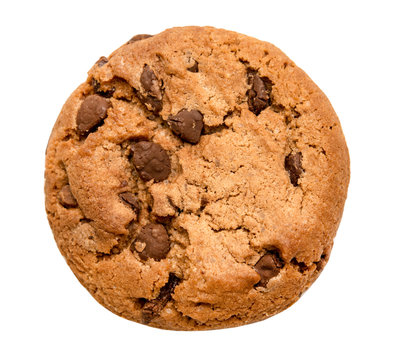

A chocolate chip cookie is a beloved American classic featuring a rich, buttery dough studded with sweet chocolate pieces. The ideal cookie strikes a perfect textural balance: a soft, chewy, and slightly gooey center ringed by crisp, golden-brown edges. The secret to its iconic flavor profile lies in the combination of brown sugar—which introduces moisture and a deep, molasses-caramel note—and vanilla, which rounds out the sweetness against the slight bitterness of the chocolate.
Vigorously cream together 1/2 cup softened butter, 1/2 cup brown sugar, and 1/3 cup white sugar until smooth. Beat in 1 egg and 1 tsp vanilla.
In a separate bowl, whisk 1 1/2 cups flour, 1/2 tsp baking soda, and 1/4 tsp salt.
Gradually stir the dry ingredients into the wet mixture until just combined. Fold in 1 cup chocolate chips.
Drop rounded tablespoons of dough onto a lined baking sheet. Bake at 350°F (180°C) for 9 to 11 minutes until the edges are golden but the centers still look soft.